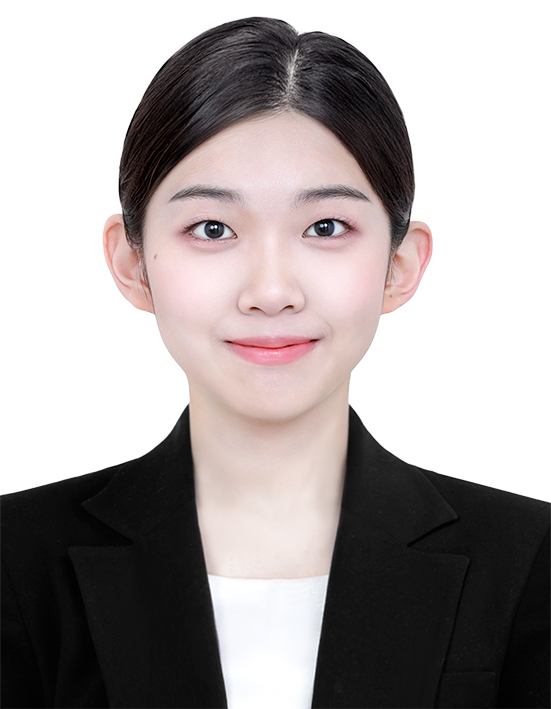
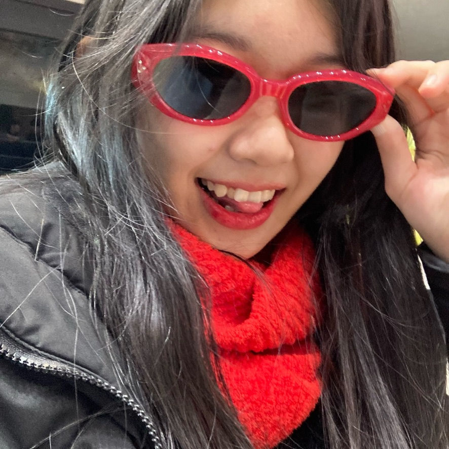

"시선을 사로잡는 아이디어"
About: YURIM


- 2006년 7월 4일 인천 출생.
- 인하공업전문대학 디지털마케팅공학과 2학년 재학 중.
남들과는 다른 시선으로 문제를 판단하고 새로운 아이디어를 도출해냅니다. 독보적인 결과물로 모든 시선을 사로잡아 한 데 비추는 마케터 입니다.
창의적인 아이디어 도출 능력을 강점으로, 익숙한 것에서도 새로운 관점을 발견하고 이를 설득력 있게 풀어낼 수 있습니다. 단순한 결과물에 머무르지 않고, 기획과 구조 설계까지 고민하며 완성도를 높이는 태도를 지향합니다.
이러한 창의성과 실무 역량을 바탕으로, 사람들에게 의미 있는 경험을 전달하는 기획자이자 마케터로 성장하는 것을 목표로 하고 있습니다.
핵심 역량: 콘텐츠 제작

- GTQ 그래픽기술자격 1급
- Canva, Premiere Pro, After Effect 활용능력 상
포토샵 등 다양한 디자인 툴을 활용하여 카드뉴스와 릴스 형태의 콘텐츠를 제작할 수 있으며, 플랫폼 특성에 맞는 형식과 길이, 메시지 전달 방식을 고려한 작업을 수행합니다. 특히 정보의 우선순위를 정리하고, 이를 시각적으로 명확하게 전달하는 구성에 집중합니다.
제작 과정에서는 전달하고자 하는 핵심 메시지를 명확히 정의하고, 사용자 흐름에 맞춰 자연스럽게 이어지는 콘텐츠 구조를 설계하는 데 집중합니다. 완성된 결과물이 실제로 어떻게 소비되고 반응을 이끌어내는지까지 고려하며, 지속적인 피드백을 통해 완성도를 높여 나아갑니다.

공백기 없는: 꾸준함
- 25.04 학생회 홍보부 활동
- 26.05 인하공전 대학일자리플러스센터 서포터즈 활동
학업과 병행하는 동안에도 공백기 없이 마케팅 관련 활동에 꾸준히 참여하며 실무 경험을 축적해왔습니다. 학생회 홍보부 활동을 통해 교내 행사와 조직의 메시지를 효과적으로 전달하기 위한 콘텐츠를 기획하고 제작했으며, 다양한 채널을 활용해 학생들의 참여를 유도하는 역할을 수행했습니다. 이 과정에서 타겟에 맞는 표현 방식과 콘텐츠 형식을 고민하며, 실제 반응을 바탕으로 개선해 나가는 경험을 쌓았습니다.
또한 대학일자리플러스센터 서포터즈로 활동하며 프로그램 홍보 콘텐츠 제작과 취업정보 전달을 위한 정보 전달에 힘써왔습니다. 카드뉴스와 릴스 등 다양한 형태의 콘텐츠를 제작하며 정보 전달력과 가독성을 높이는 데 집중했고, 콘텐츠가 실제 참여로 이어질 수 있도록 구성과 메시지를 설계했습니다.
두 활동을 통해 단발적인 경험에 그치지 않고, 지속적으로 마케팅 실무를 경험하며 역량을 발전시켜왔습니다. 일정과 역할을 꾸준히 관리하며 책임감 있게 참여해왔고, 다양한 협업 환경 속에서 커뮤니케이션 능력 또한 함께 키워왔습니다. 이러한 지속적인 활동 경험은 실질적인 실행력과 이해도를 갖춘 마케터로 성장하는 기반이 되었습니다.